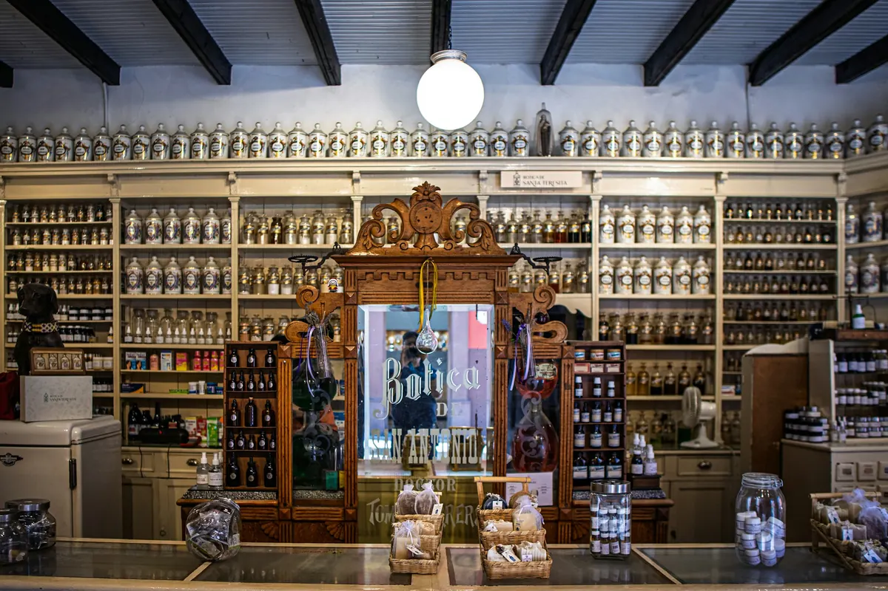
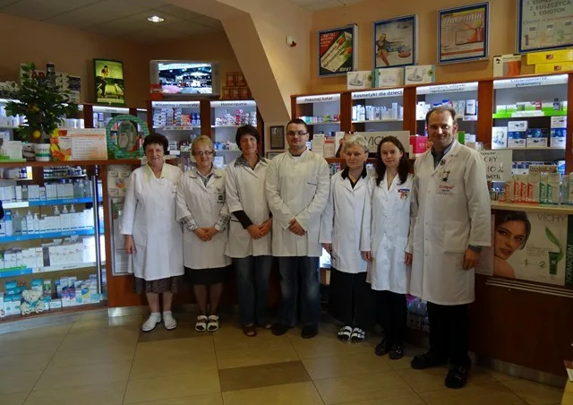

O nas
Apteka rodzinna, współczesna i ogólnodostępna, która pielęgnuje tradycje zawodu. Na pierwszym miejscu zawsze jest zdrowie i dobro pacjenta.

Historia w pięciu datach
- 1981
Jakub Tokarz urządza od podstaw aptekę „PZF Cefarm Kraków”, drugą w Limanowej.
- 1990
We wrześniu otwiera w Sowlinach pierwszą prywatną aptekę w Limanowej.
- 1995
Halina i Jakub Tokarzowie zakładają Aptekę „Centrum” na Rynku 2.
- 2003
Odznaka „Zasłużony dla Środowiska Aptekarskiego Małopolski” od Okręgowej Izby Aptekarskiej w Krakowie.
- dziś
Wśród właścicieli jest już kolejne pokolenie: mgr farm. Magdalena Tokarz i Michał Tokarz.
Zespół
Wysoko wykwalifikowani farmaceuci i technicy, miła i profesjonalna obsługa. Szkolimy też nową kadrę: w naszych aptekach odbywają się staże i praktyki zawodowe.

Wyróżnienia
- „Zasłużony dla Środowiska Aptekarskiego Małopolski 2003”, OIA Kraków
- dyplom „Przyjaciel i Doradca Pacjenta”
- honorowe członkostwo Instytutu Promocji Zdrowia, Forum Polskiej Farmacji
- „Apteka Fair Play” za etyczną współpracę w interesie pacjentów
- Aptekarz Roku 2002: 5. miejsce
Pomagamy
- stowarzyszenie niepełnosprawnych „Cyrenejczyk”
- klub sportowy „Limanovia”
- szkoły i miejskie inicjatywy
- wydawnictwa, m.in. mapy i „Almanach Ziemi Limanowskiej”
- Dom Opieki Społecznej i Paliatywnej w Sowlinach
- Caritas
Przez kilka lat prowadziliśmy też spotkania z młodzieżą o uzależnieniach.